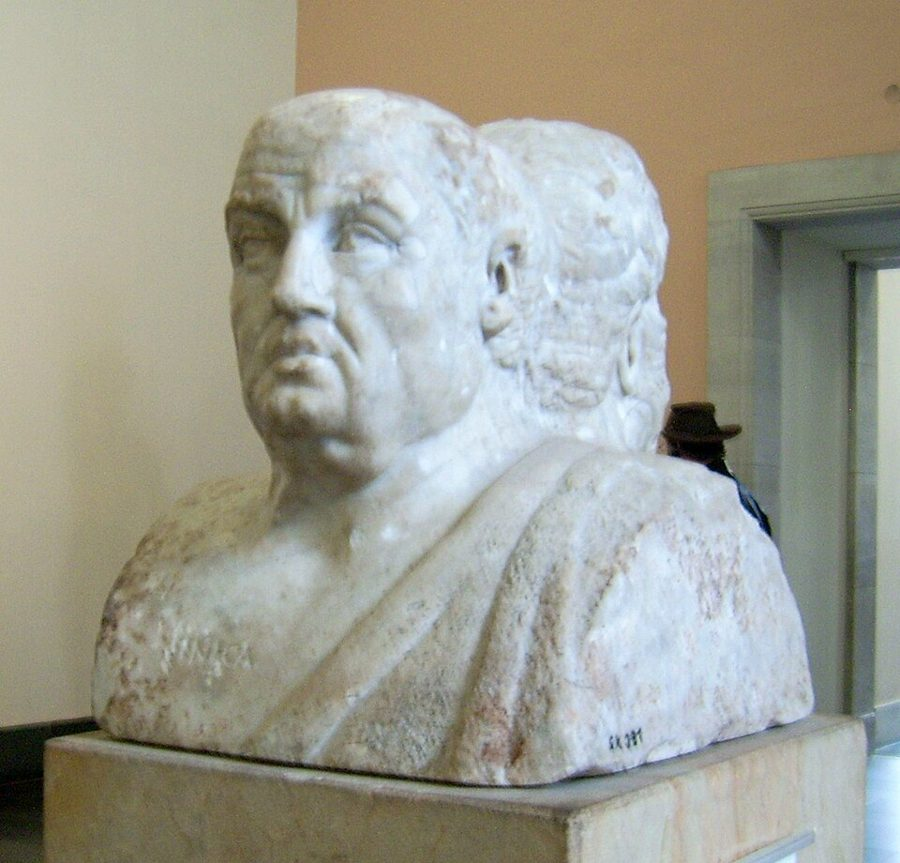
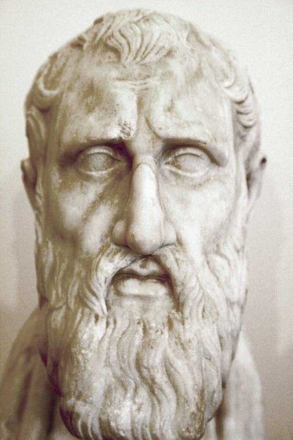

grace under pressure
… Grace under pressure, for example …
临危不乱的风度
常被认为出自海明威：1929 年有人问他「胆量」指什么，他答 grace under pressure。英文里常拿来夸人沉得住气。
作者在 2004 年的序里说，第 13、14 两章在他看来是全书的核心。这一章很短，换了一种「软」的哲学：古人在命运无常的世界里怎样自处。从一位法国作家的最后选择讲起，经过一场名人葬礼上的诗、诗人自己的临终、斯多葛派的一段小史，落到一张「倒霉的时候怎么做」的清单。翻过去是后记，书里虚构人物的线在那里收尾。读的时候抓一条线：随机性管不了的，还剩什么。

第 13 章讲怀疑论，说完了「怎样想」。这一章是正文最后一章，作者自己点明换了角度：不是第一部讲黑天鹅问题（第 7 章）时那种硬的科学哲学，而是古人怎样体面地对付命运。回指不少：§1 谈英雄怎样被评判，接回第 2 章 §8 作者重读《伊利亚特》那段，他在那里就预告过斯多葛；§3 说情绪一来道理就进不去，接回第 11、12 章。这一页之后只剩一篇附笔。
结果由不得人的时候，人还能管住什么？
读的时候带着这几个问题。不用先找答案，读完回来对照「检查一下理解」。
§1 从一位法国作家的最后选择起笔，马上升到斯多葛派和伊壁鸠鲁派，再一口气举出几个日常的例子：临危不乱、不巴结人、表白时的骄傲。从译本：「本書最後這一章，將從全新的角度討論隨機性」那一段起，作者才交代这一章要换一种哲学，像一篇放晚了的导言。§2 的入口是一场名人葬礼，看着像八卦；接着作者用一整段夸一位诗人的诗风，这里会觉得绕远。然后才是诗本身、作者的解读、他给诗人拆的台，最后是斯多葛派的一段小史。§3 很短，是一张清单，最后一句是个玩笑。翻过去是后记，这里会觉得「突然跳了」：从劝诫一下回到书里的虚构人物，一页纸收尾。
这一页就是原书和译本的第 14 章，加上很短的后记，一共 4 节。粗体是本站给的节名，后面是档和译本字数；下面是译本的小标题和这一节在译本电子书里开头的几个字（搜它就能跳过去），再下面是英文原文的开头。「先读」是这一章的骨架，「有空」好看、跳过不丢线，「可跳过」读不读都行。读完打个勾。
先把这一页用到、作者默认你懂的几个概念讲一遍。讲的是概念本身，作者拿它推出什么，读原书时自己看。别页讲过的概念，点链接过去看。
公元前 300 年前后在雅典兴起的哲学学派，因创始人芝诺在城里一道柱廊（stoa）下讲学得名，后来在罗马盛行。它的核心是分清两类事：自己管得了的（判断、选择、怎么做）和管不了的（财富、名声、病痛、别人的举动），力气只花在前一类上；德性被看成唯一真正的好东西。
英语里小写的 stoic，日常意思是「能忍、不露声色」，像英国人说的 stiff upper lip（绷住上唇不让它发抖）。哲学史上的斯多葛派比这复杂，两者不能画等号。同时期和它对立的伊壁鸠鲁学派（Epicureanism，译本：伊比鳩魯學派）以免于痛苦和恐惧的宁静为目标，今天也常被误解成「讲究吃喝享乐」。
在这一页：§1、§2 作者要分辨的正是日常用法和学派本身这两层意思；§2 后半交代这一派的来历。
一个决定好不好，和它的结果好不好，是两件事。闯红灯没出事，不说明闯红灯是好决定；系了安全带还是受了伤，也不说明系安全带错了。只要有运气的成分，同一个决定可以落到好结果，也可以落到坏结果。
心理学把「拿结果去评判当初的决定」叫结果偏差。Baron 和 Hershey 1988 年的一组实验里，受试者看同样的医疗决定，只是结果不同（手术成功或失败），给「这个决定做得好不好」的打分就跟着结果走，尽管做决定时的信息一模一样。程序员熟悉的版本：一次没测就上线的发布碰巧没出事，下一次大家就更敢不测。
在这一页：§1 作者谈英雄怎样被评判，接回第 2 章 §8 重读《伊利亚特》那段，也接回全书说的另类历史。
英文 virtue 今天多指道德上的「美德」：诚实、善良、节制。它来自拉丁文 virtus，词根 vir 是「男人」，本义是男子气概、勇气，后来泛指一个人的出色，再到道德上的优点。文艺复兴时马基雅维利笔下的 virtù，是领袖的本事和魄力。
斯多葛派说的德性是一种整体的出色：智慧、正义、勇敢、节制合在一起；有了它就够了，外来的好运坏运不增不减它。英文老话「美德本身就是报酬」说的就是这层意思。容易混的：英文里另有一个词 virtu（也拼 vertu），指古玩、艺术品的鉴赏趣味，和这里无关。
在这一页：§2 后半交代斯多葛派的历史时，作者特意写了 virtu 这个拼法，要的是古义。
按在书里出现的顺序排，标题前是节号。只讲到读懂这一页需要的程度。
1972 年 9 月，他视力已经很差、怕会完全失明，结束了自己的生命。作者拿这件事开篇，是为了引出斯多葛派「面对命运，自己选择怎么做」的主张；同在 §1，作者也说这种极端的做法只在很窄的情形下才被推荐，别的时候被看成懦弱。这一章其余部分讲的，多是日常小事上的尊严。
1932 年他确诊喉癌，在雅典做了气管切开手术，从此不能说话，靠写纸条和人交流，第二年在亚历山大去世。§2 作者说的他临终的样子，是作者自己的说法，书里没给出处。
Jacqueline Kennedy Onassis（1929–1994）是美国总统肯尼迪的遗孀，后来嫁给希腊船王 Onassis；她晚年的伴侣 Maurice Tempelsman 是钻石商。1994 年 5 月她在纽约的葬礼上，Tempelsman 念的其实是 Cavafy 的另一首诗〈伊萨卡〉（Ithaka），据说是她喜爱的一首；作者记成了〈神弃安东尼〉。这不影响作者借诗讲的道理。
公元前 31 年，罗马的安东尼（Mark Antony）和埃及女王克利奥帕特拉在希腊西岸的亚克兴海战中败给屋大维（Octavius，后来的奥古斯都皇帝）；第二年屋大维兵临亚历山大城，安东尼自杀。普鲁塔克的《安东尼传》记了一个传说：城破前夜，人们听见一队狂欢的乐声穿城而去，以为是安东尼一向效法的酒神离开了他。Cavafy 的诗名就取自这段。酒神在罗马叫巴克斯（Bacchus），在希腊叫狄俄尼索斯，章名「巴克斯抛弃安东尼」说的是同一件事。

罗马人的命运女神（Fortuna，译本：福爾圖娜女神），常被画成手持丰饶角、站在轮子或球上：好运坏运都随她转。第 1 章作者说过她是朱庇特的长女，全书第一部讲的就是她的把戏。§3 最后一句拿她收尾。
读英文原文时值得停一下的词和句：交易员的行话、作者的反话和双关、熟词生义。灰色斜体是原句里连续的几个词，在英文电子书里搜它就能找到；标「每个字都认识」的，是每个词都眼熟、合起来意思却变了的，最容易读错。点「记下」收进词本。
对着译本读这一章时，下面这些地方会把人读歪。方框里是译本的原句，在译本电子书里搜它就能找到；灰色斜体是英文原文那一处。只收意思错了、反了、漏了的，措辞上的出入和台湾用语不收。全书的勘误汇总在译本勘误。
… the end that becomes a classicist …
译本：「古典派作家就是這樣的結局」
become 在这里是「与……相称、配得上」。原文是一句评价：这样的结局配得上一位古典派作家。译本读来像在陈述古典派作家通常都这样收场，变成了一条并不存在的规律。
… what is commonly accepted today in middlebrow …
译本：「今天的中庸文化中，人們普遍接受的作法」
middlebrow 是「半通不通的大众文化」，不是「中庸」。原文说：两派当年的主张，都不是今天大众文化以为的那个意思（斯多葛＝能忍，伊壁鸠鲁＝享乐）。译本读来像两派都反对今天流行的某种做法。
… in the small and the large …
译本：「用輕於鴻毛或重於泰山的方式」
原文只是说，掌控随机性可以体现在大大小小的事情怎么做上，接着举的都是日常例子。这个成语讲的是死的分量，放在谈自杀的段落里，读者容易以为说的是怎样死。
… have eluded the last fifteen centuries …
译本：「似乎不受過去十五個世紀的西方文學影響」
elude 在这里是「够不着、没能做到」：作者说 Cavafy 那种洗练的诗，西方文学十五个世纪似乎都没写出来。译本说成他没受这些文学影响，是另一回事。
… Most of his poems take place in …
译本：「他的詩作大都寫於敘利亞」
take place in 是「故事发生在」。Cavafy 一生大多住在亚历山大城，许多诗以古代的叙利亚、小亚细亚和亚历山大为背景。译本读来像他人在叙利亚写诗。
… not to enter denial, not to …
译本：「不要否定自己」
enter denial 是心理学上的「否认」：不肯接受已经发生的事。诗劝安东尼面对败局，原文同一句接着说，别以为是耳朵眼睛骗了他。「否定自己」读来像劝他别自我贬低，意思不同。
… ancient sense when virtue meant virtu …
译本：「美德（virtue）的意思是指藝術嗜好（virtu）」
作者要的是拉丁文 virtus、意大利文 virtù 那种古义的德性（见「先用中文过一遍」的概念块）。英文词典里 virtu 另有「古玩鉴赏」的意思，译本取了它，斯多葛的美德就成了艺术爱好，和同一句「美德本身就是报酬」也接不上。
… Cato found it beneath him to have …
译本：「嚴峻的加圖發現他有人的感覺」
find it beneath oneself 是「认为……有失身份、不屑于」。原文拿加图当走极端的例子：他连有人的情感都觉得丢脸。译本成了加图发现自己有人的感觉，意思正好反了，和紧接着「塞内加更有人味」的对照也没了。
… a modicum of schadenfreude, Nero’s skepticism …
译本：「他懷疑自己的癌症」
原文这一句的主语是 Nero 的怀疑主义（skepticism）：第 1 章起他做交易、看世界的那一套态度，不是他对自己病情的判断，病情另有一句。译本把怀疑的对象换成了自己的病，两件事并成了一件。
读完这一章再看。下面是作者在这一章里的主张，由本站按主张之间的逻辑重新组织，不按原书的顺序；每条后面是节号，拿不准就回书里那一节再读一遍。
不管选择多精巧、多会算胜算，结果终归不由人。剩下的办法是尊严，他的定义是执行一套不随眼前境遇变化的行为准则。他承认这未必是最优的做法，但说它肯定让人感觉最好。英雄以行为论，不以结果论：这接回第 2 章 §8 他重读《伊利亚特》的那段。
§1他拿蒙泰朗的选择开篇，转述斯多葛派的处方：面对随机的结果，选自己能掌控的做法，最后总还有一个拒绝的选项；伊壁鸠鲁派也主张这种掌控，两派今天都被大众文化误读。他同时说，这种极端的做法只在很窄的情形下被推荐，别的时候算懦弱。
§1 §2他借 Cavafy 的〈神弃安东尼〉：被情绪震动时照样去听，只是别像懦夫那样哀求抱怨。人生来就会动情，动情不丢人；错的是不走英雄的、至少是体面的路，他说这才是斯多葛的真意。他随即拆台：诗人自己临终没做到。他推荐塞内加，嫌加图走了极端。
§2他回到第 11、12 章的看法：情绪一来，道理就进不去，自助书即使不是骗子写的，也大多（largely）无效。斯多葛有意思的地方，在于它诉诸尊严和个人的美感，他说这些是我们基因的一部分。于是他开了一张倒霉时的守则，结尾说命运女神唯一管不着的是你的举止。
§3Nero 挺过了 28% 的死亡机会，痊愈，又在华尔街明星变穷时发了财，却几乎没买什么。他为躲伦敦的堵车学开直升机，又骑车通勤。作者说他在专业里对概率极敏感，不知怎的（somehow）没完全带到身体的风险上：直升机在巴特西公园附近降落时坠毁，黑天鹅终于等到了他。
§4合起来：结果归运气，做法归自己。作者把全书「别以成败论英雄」落到个人怎么过日子上，再用后记让最像他自己的人物也没逃过一次没算进去的风险。
No matter how sophisticated our choices, how good we are at dominating the odds, randomness will have the last word.— §1。本站译：不管我们的选择多精巧、多会驾驭胜算，最后一句话总归是随机性说的。
口气是下判断，带着点认命。关键是 the last word：争论时说最后一句话的人算赢。全书前十几章都在教人怎样不被随机愚弄，这里承认，算得再好也赢不了它，于是话题从「怎么算」转到「怎么做」。译本：「隨機性總是握有最後的發言權」意思到了；留意前半句的 how good we are 不是在说人不行，是说再行也一样。
The only article Lady Fortuna has no control over is your behavior. Good luck.— §3。本站译：命运女神唯一管不着的一样东西，是你的举止。祝你好运。
前一句是全章的结论，后一句是个玩笑：在一本讲运气的书里，劝完人运气管不着你的举止，再祝一句好运，等于承认结果还是要看运气。article 是「一样东西」，不是「文章」。译本：「祝好運」照字面译了，反讽要靠读者自己听出来。后记最后一句也是同一种手法：the black swan got its man 套的是「加拿大骑警总能抓到他要的人」那句老话；Nero 学开直升机上的那个 crash course（速成班），事后读来也像一句不祥的双关。
这本书 2004 年出第二版，书里讲的多是 1980–2003 年的事。下面挑出这一页里能被后来的研究或事情检验的说法，分「书里 / 当时 / 今天」几栏，并给一个结论。结论判的是标题里「书里的说法：」后面那一句。全书的这一节汇总在今天怎么看。
读完作者的主张，再看它站不站得住。每一块摆出三样：主流怎么看，作者怎么看，本站的评论。最后一句是本站对这一页的总体判断。
主流看法：学界把斯多葛派看成一套完整的伦理学：德性是唯一的善，激情是错误的判断，要靠理性修正；在某些极端处境下，他们认为结束生命可以是理性的选择。2010 年代以后流行的「现代斯多葛」，多取它分清可控与不可控的那一半，当作心理调适的方法。
作者的看法：斯多葛就是在随机面前保住尊严，尊严是一套不随境遇变化的准则；他看重的是个人的美感和风度。§1 §3
本站的评论：他抓住的是斯多葛最好用的那一半：结果不由你，做法由你。他把它讲成一种美学（刮好胡子、对助理客气），比学派本身窄，带着他自己的贵族趣味，但鲜活，也比「咬牙忍着」准。蒙泰朗的开场要读准：作者是在介绍古人的一种立场，他自己也说这种极端的做法只在很窄的情形下才被推荐，这一章真正的落点在日常小事上。
主流看法：心理治疗研究的结论是，读一遍道理很难改变什么，按方法反复练才有用：结构化的认知行为自助读本有中等效果（见「今天怎么看」），而这类疗法的源头之一正是斯多葛。
作者的看法：自助书和说教大多无效，因为情绪一来道理就进不去；斯多葛不同，它诉诸尊严和个人美感，这些是我们基因的一部分。§3
本站的评论：这里有张力：作者刚说完劝诫没用，接着自己开了一张劝诫清单，最后那句祝你好运像是自知。「尊严在基因里，所以管用」是他的信念，书里没有论证。但他的做法里有一处站得住：尊严被他定义成一套不随眼前境遇变的准则。照这个定义，准则只能在平静时定好、在倒霉时照做（这是本站的引申），正好绕开了「情绪一来道理就进不去」。这比「倒霉时想起一句格言」靠谱。
主流看法：风险心理学发现，人的冒险倾向因领域而异：同一个人可能在投资上谨慎、在开车或运动上大胆。Weber、Blais 和 Betz 2002 年编的「分领域风险态度量表」（DOSPERT）就是为了测这个；他们发现领域之间的差别，多半来自对不同领域风险大小的感知不同。
作者的看法：Nero 在专业里对概率极敏感，却不知怎的没完全带到身体的风险上；黑天鹅终于等到了他。§4
本站的评论：这是全书很狠的一笔：作者让最像自己的人物也被随机性愚弄，接上第 11 章 §8 那位推断时没用上统计脑子的宽客，和 §24 作者的招认：他生来就会被随机性愚弄。「黑天鹅」在这里用得宽：私人直升机的风险有统计可查，对 Nero 来说它是没算进去，不是算不出。好在作者后来在《黑天鹅》（2007）里把黑天鹅说成相对于观察者的意外，按那个说法也说得通。
本站的总体看法：这一章短，却是作者自己说的全书核心之一：结果归运气，做法归自己。当一种处世的姿态读，很好用，也比「斯多葛＝能忍」准；当斯多葛哲学史读，要打折扣。清单里最值得带走的是「准则要事先定」这层意思。后记把 Nero 的结局交还给第一部开头的梭伦：没看到结局之前，别说谁是幸福的。
先在心里答，再点开。答错的那题，回书里把对应那一节再读一遍。
因为结果终归不由人，随机性有最后一句话；一套不随眼前境遇变的准则，是唯一自己说了算的东西。他说它让人感觉最好，§3 又说这种态度让输和赢一样有英雄气概。
看这一次的结局说明不了。作者说英雄以行为论、不以结果论；第 2 章说评判一个决定，要看所有可能的历史，不看碰巧发生的那一种。他按自己的准则做了，这一次的上涨是结果那一边的事。
诗劝他向离他而去的亚历山大城告别，被情绪震动时照样去听，只是别像懦夫那样哀求、抱怨。它允许动情，只禁止乞怜，所以不是强忍。
他自己说是忍不住要嘲讽一下。放在这里，它也提醒读者，知道道理和做到是两回事，这正是 §3 作者开清单之前承认的：情绪一来，道理就进不去。
走极端的例子：他连有人的情感都觉得有失身份。作者用他说明斯多葛也会被推过头，接着推荐更有人味的塞内加。
作者只说他对概率的敏感不知怎的没完全带到身体的风险上：为躲堵车学开直升机、骑车通勤，都是危险的事。作者没有再解释为什么，只用黑天鹅那一句收尾。
用一句话说这一页：
想一想：你有没有一条「不看这一次结果」的准则，不管赢了输了都照做？比如线上出了事先写复盘、不追究个人，或者再急也不跳过测试。它是在平静的时候定下的，还是出事时才想起来的？
读过又忘了，从这里想起来。挑的是这一页最值得记住的故事和说法，不按原书顺序；每条后面是节号，想细看就回书里那一节。全书各页的这一节都收在全书回顾。
一句话：结果归运气，举止归自己：命运女神唯一管不着的，是你怎么做。
作者说斯多葛不是绷着脸硬忍。被情绪震动没关系，错在哀求和抱怨。他借的是 Cavafy 写安东尼兵败那首诗。
§1 §2随机性有最后一句话。人能保住的是尊严：一套不看眼前境遇的做法。作者承认它未必最优，但说它让人感觉最好。
§1作者夸完 Cavafy，又忍不住说：诗人临终喉癌失声，常不顾体面地哭，拉着访客不让走。
§2倒霉时的守则：去刑场穿上最体面的衣服，亏钱时对助理格外客气，被伴侣甩了也不自怜，生意少了脾气照旧。命运管不着你的举止。祝你好运。
§3Nero 挺过了癌症，在别人变穷时发了财，为躲伦敦周五的堵车学开直升机。一个刮风天，他在巴特西公园附近降落时坠机，机上只有他一人。
§4